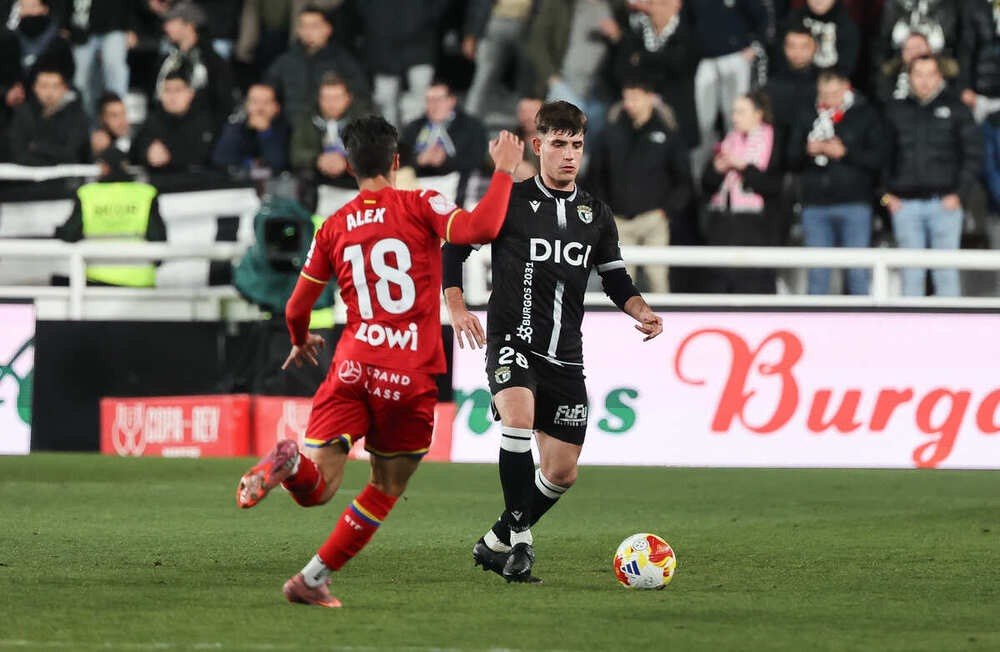

El conjunto blanquinegro visita al CD Laredo con el objetivo de evitar sorpresas y conseguir el billete para la segunda ronda de la Copa del Rey
Los blanquinegros disputarán la primera eliminatoria del torneo el próximo jueves 29 de octubre a las 20:00 horas, en los Campos de El Paloma que se encuentra situado en la localidad de Santoña, ya que el estadio en el que actúa como local el equipo cántabro, el San Lorenzo se encuentra en obras. Es de césped artificial y cuenta con una capacidad de 3.000 personas, de las cuales, han facilitado 400 entradas a la afición burgalesa, a un precio único de 15 euros.
Los burgaleses afrontan la eliminatoria como favoritos, ya que sobre el papel son superiores. Mientras que el Burgos CF compite en la segunda división española, los cántabros se encuentran en Tercera RFEF.
El CD Laredo llega al encuentro en muy buen momento aunque el finde pasado cayó derrotado por un gol a cero frente al Cayón, ya que se sitúa segundo en la clasificación habiendo ganado seis de sus últimos siete encuentros.
La eliminatoria servirá a Sergio Francisco para dar descanso a los más habituales y oportunidad a jugadores que no han tenido minutos en este inicio de temporada como Mario Cantero o Bruno Iribarne.
Más allá de las posibles rotaciones, el objetivo será el mismo: tener buenas sensaciones y superar la eliminatoria.
Será la primera vez que el Burgos CF se enfrente a Laredo. Sin embargo, el filial ya se ha enfrentado a él en 4 ocasiones durante las temporadas 2021/2022 y 2022/2023, en el que ha recolectado una victoria y tres derrotas ambas en Segunda RFEF
La diferencia de categoría sitúa a los burgaleses como favoritos, pero todos sabemos que, en el fútbol, eso no vale de nada. El Laredo jugará sin presión, ayudado de su afición en busca de lograr una hazaña en su historia.